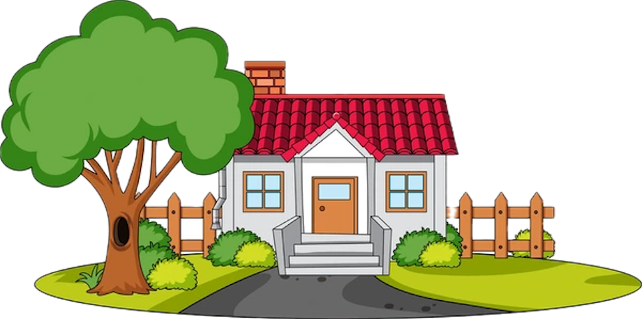

The Green Neighbor Project is a community-driven, volunteer-based initiative that provides free lawn care services to the elderly, disabled, or those in need of assistance in Wilmington, NC.
We primarily serve elderly, disabled, or income-limited individuals who could use a helping hand with basic yard upkeep.
None at all — our project is 100% volunteer-powered and free for neighbors in need- equipment can be provided as well.
You can request lawn care services by filling out the service request form found here.
We offer simple yard care such as mowing, light trimming, leaf raking, and general lawn clean-up — not professional landscaping.
You can get involved as a volunteer by first signing up here and then attending our orientation session.
Absolutely! We'll provide guidance, and you can help with tasks like raking, cleanup, or team coordination.

Have more questions? Don't hesitate to reach out!